CS184/284A Spring 2025 Homework 2 Write-Up
Link to webpage: (TODO) https://cal-cs184-student.github.io/hw-webpages-hetvi15986/hw2/index.html
Link to GitHub repository: (TODO) https://github.com/cal-cs184-student/hw2-meshedit-lhhp

Overview
In this homework, I implemented a full geometric modeling pipeline – from Bezier curves and surfaces (Part 1-2) to Triangle meshes and mesh subdivision (Parts 3-6). In part 1-2, I implemented de Casteljau's algorithm for both 2D and for 3D Bezier patches. Both had a recursive interpolation step using control points at parameter t. In Part 3, I implemented area-weighted vertex normals (using a half-edge data structure). In Parts4-5, I implemented edge flips and edge splits on a half-edge mesh. Missing a single pointer caused huge bugs and errors in later parts, and spent a lot of time debugging and tracing face cycles on paper. Part 6 brought everything together in loop subdivision, where I used edge splits and flips to do 4-1 subdivision. On of my largest takeaways was that drawing out and visualizing things on paper helps me really secure my knowledge of what's wrong, and where I should look to debug next.Section I: Bezier Curves and Surfaces
Part 1: Bezier curves with 1D de Casteljau subdivision
De Casteljau's algorithm takes a set of control points and repeatedly reduces them through linear interpolation at a chosen parameter t. At each level, every consecutive pair of points is blended together (a point closer to the first if t is small, closer to the second if t is large), producing one fewer point than the previous level. This continues until a single point remains, which is the exact location on the Bezier curve at parameter t.
To implement this, evaluateStep handles a single reduction, iterating over adjacent pairs and computing (1-t)*p_i + t*p_{i+1} for each. For Bezier surfaces, the same step is applied in 3D with t passed explicitly as a parameter. evaluate1D then repeatedly calls evaluateStep until one point remains, and evaluate applies evaluate1D first across each row of the control point grid at parameter u, then down the resulting column at parameter v to get the final surface point.
Evaluation Steps
each step / level of the evaluation from the original control points down to the final evaluated point
|
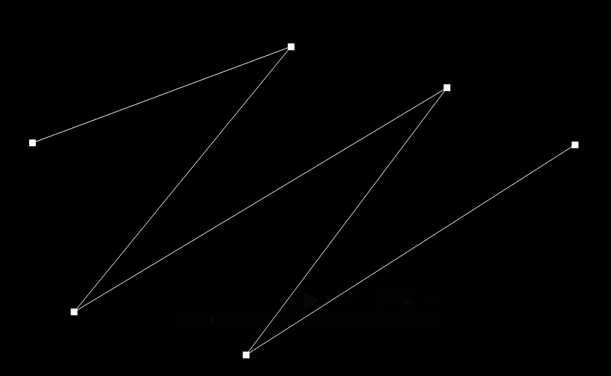 |
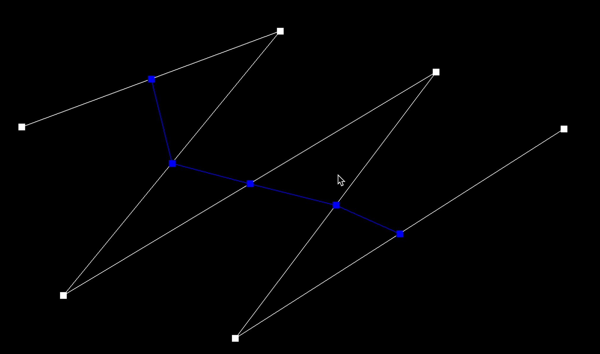 |
|
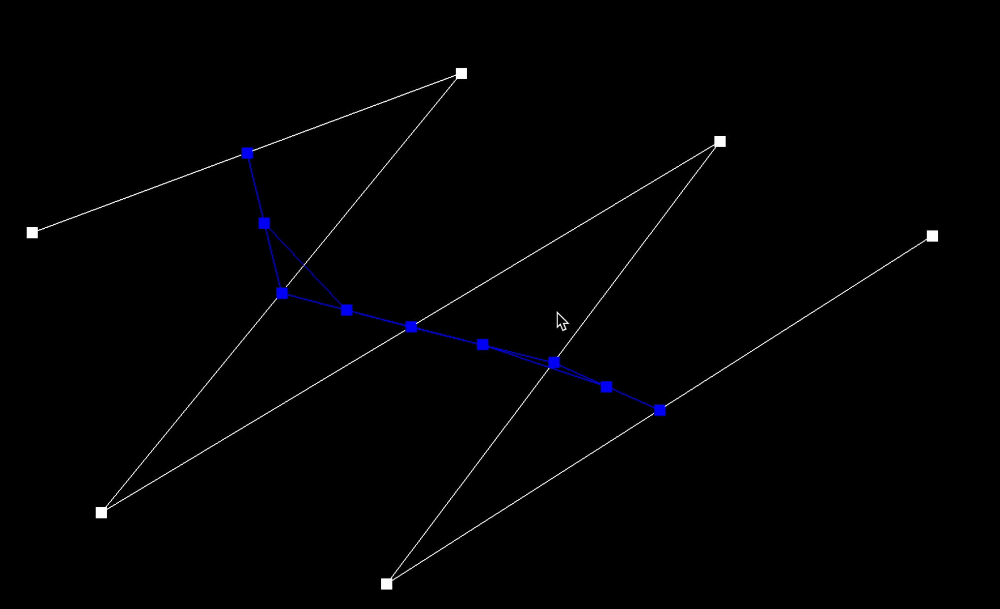 |
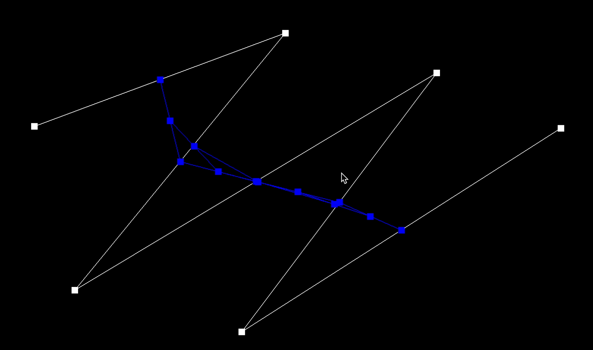 |
|
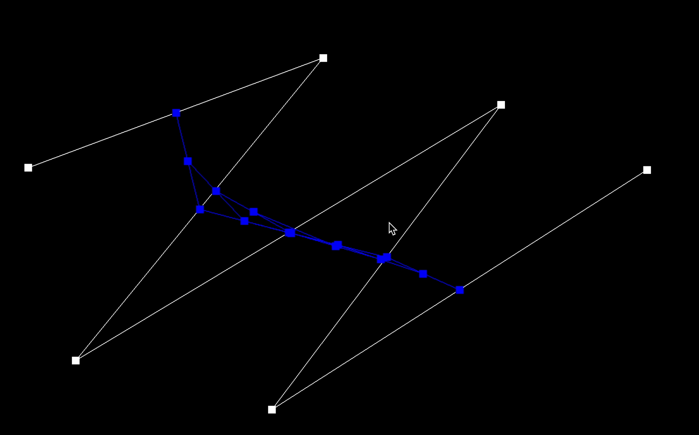 |
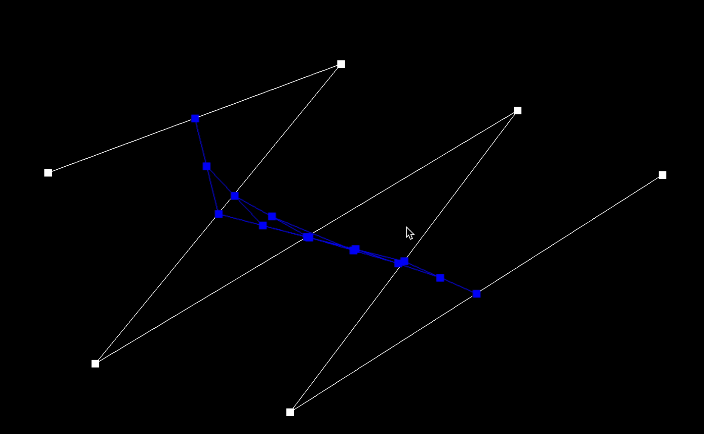 |
|
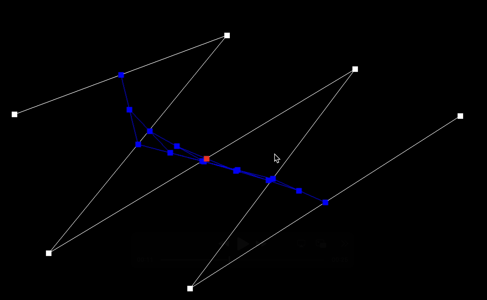 |
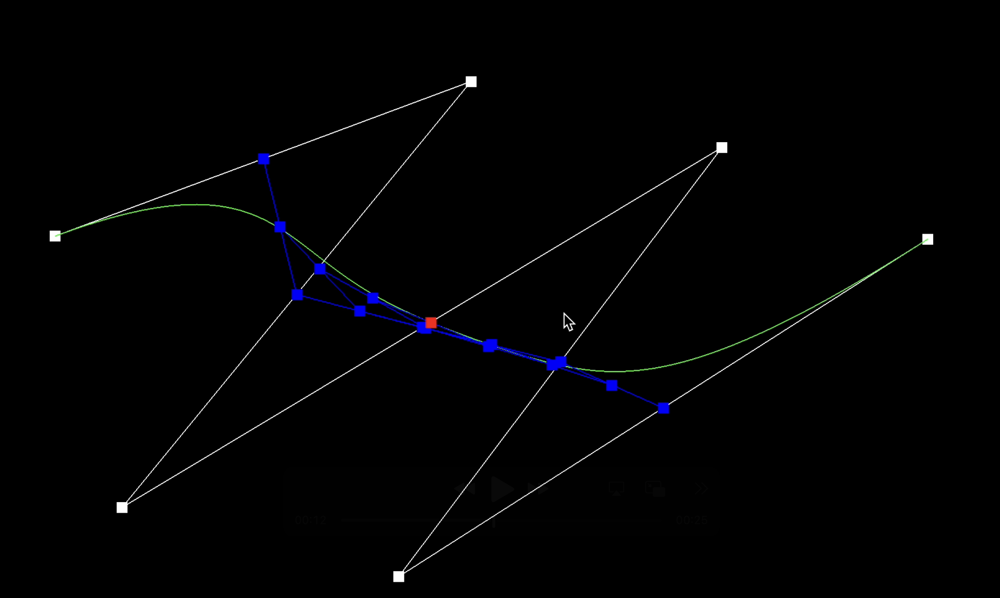 |
|
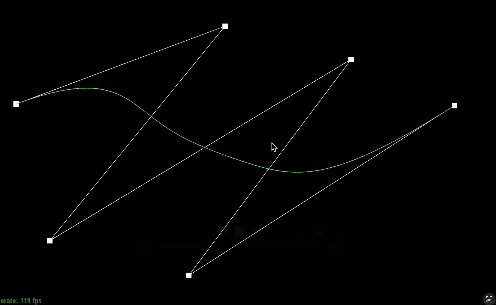 |
|
Moving the original control points around and modifying the parameter t
|
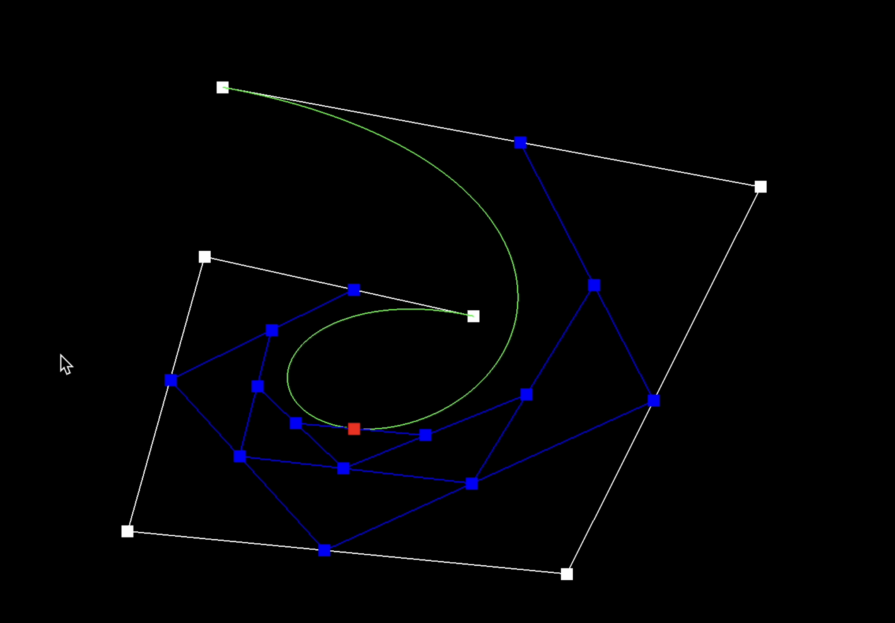 |
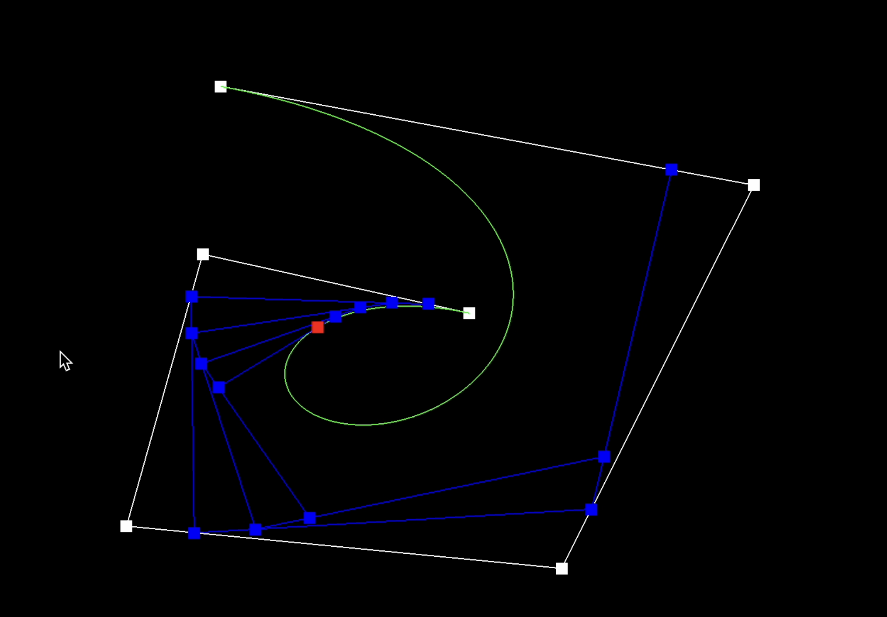 |
|
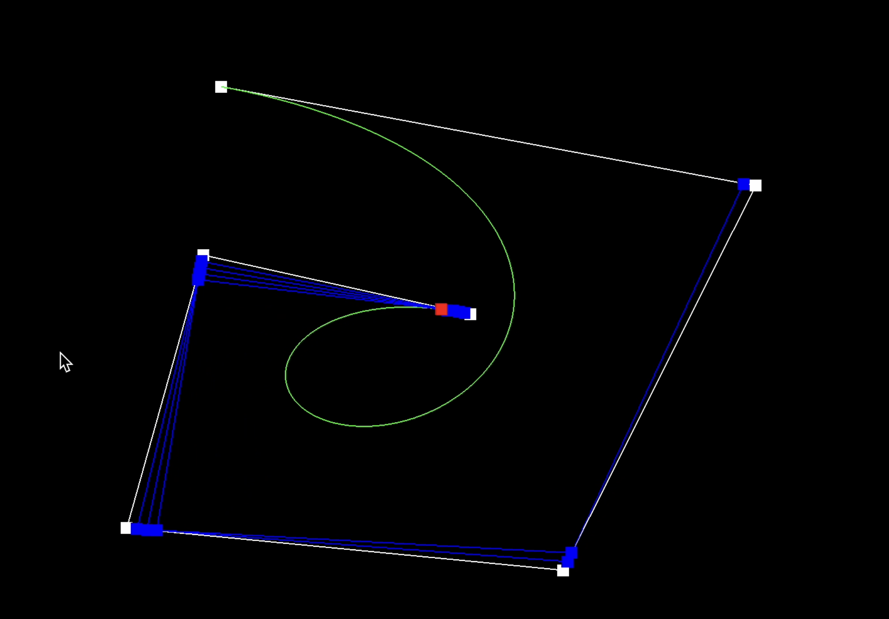 |
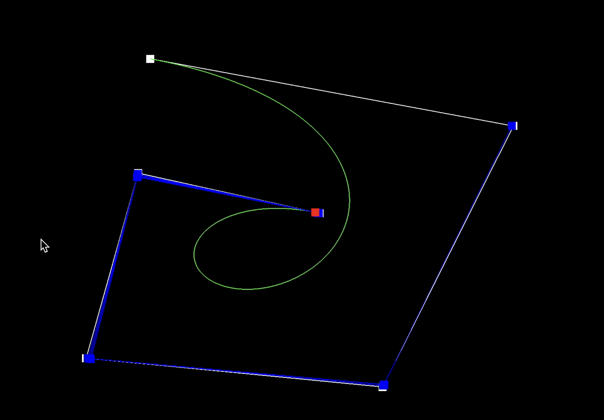 |
Part 2: Bezier surfaces with separable 1D de Casteljau
Bezier surfaces apply de Casteljau's algorithm twice — once in each dimension. Given an
n×n grid of control points, we sweep across each row using parameter u, collapsing each
row down to a single point via repeated linear interpolation. The n resulting points form
a new curve, which we then evaluate at parameter v the same way, yielding the final point
on the surface. In our implementation, evaluate1D handles the full reduction
of a single row, evaluateStep handles one level of that reduction, and
evaluate(u, v) ties it together by calling evaluate1D across
all rows then once more on the results.
Teapot.dae evaluated by my Implementation

|

|

|
|
Section II: Triangle Meshes and Half-Edge Data Structure
Part 3: Area-weighted vertex normals
To compute area-weighted vertex normals, I traverse all faces incident to a given vertex using the half-edge data structure. For each neighboring face, I retrieve its three vertex positions and compute the cross product of two edge vectors. Since the magnitude of the cross product equals twice the triangle's area, this naturally weights each face's normal contribution by its area. I accumulate these weighted normals and return the normalized sum.
The traversal starts at the vertex's halfedge and walks around the vertex by repeatedly
calling twin()->next() until returning to the starting halfedge. Since
normal() is a const function, I use HalfedgeCIter throughout.
comparing teapot flat shading with and without vertex normals

|

|

|
Part 4: Edge flip
To implement edge flip, I first collected all existing mesh elements — the six inner halfedges, four outer halfedges, four vertices, four edges, and two faces — before modifying anything. Then I reassigned every pointer for every element in the modified mesh, even those that hadn't changed, to avoid missing any stale references. The edge itself is not deleted or recreated — only its halfedges are rewired from connecting c↔d to connecting a↔b.
The most useful debugging trick was adding print statements to trace the face cycles after flipping, printing each vertex position in the cycle to verify all three vertices were distinct and in the correct order. This immediately revealed which specific pointer was wrong.
|
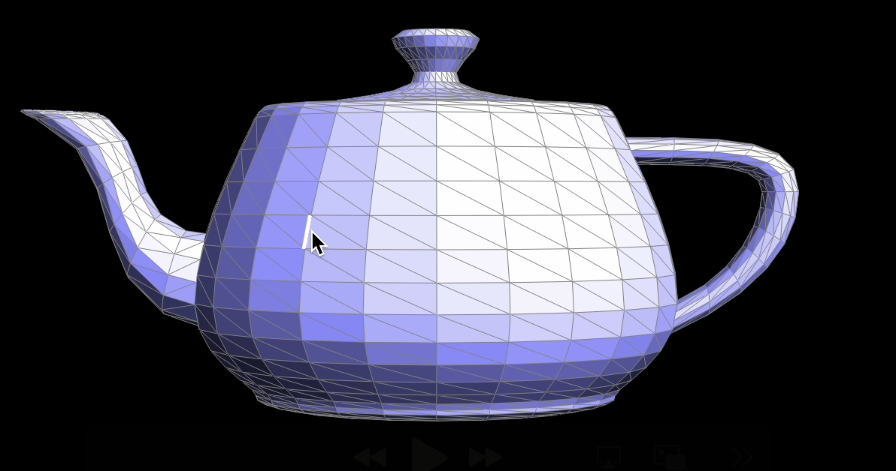 |
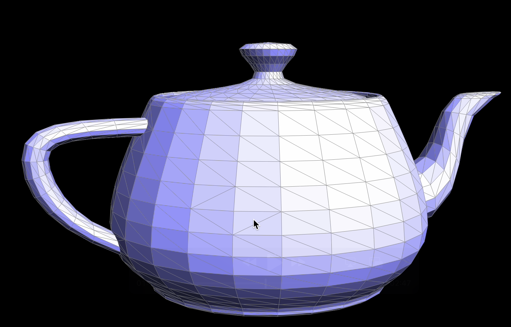 |
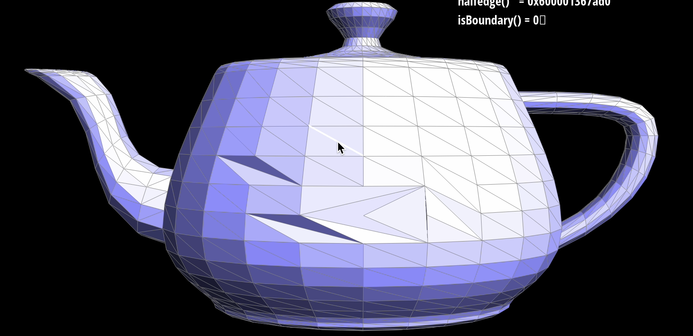 |
The initial implementation returned an empty EdgeIter — fixed by adding return e0. After that, surrounding triangles were disappearing and nearby faces appeared pixelated. I added print statements to trace face cycles and found that v_a appeared twice in f_R's cycle, meaning h_dc->next() was pointing back to a halfedge at the same vertex. The next chain for f_R was wrong — h_dc was pointing to h_ad when it should have pointed to h_bc first. After fixing the cycle, the mesh still looked broken, which was traced to the outer halfedge setNeighbors calls corrupting the next pointers of neighboring faces. The final fix was deriving the correct assignments from a working numbered implementation and carefully mapping to named variables. Key mistakes in total: wrong next order in f_R, outer halfedge corruption, missing return e0, and forgetting to update edge e0.
Part 5: Edge split
To implement edge split, I collected all existing mesh elements first, then allocated new
ones: one new vertex v_m at the midpoint of the split edge, two new faces, three new edges,
and six new halfedges. The original edge e0 is reused as one of the two halves of the split.
I then called setNeighbors on every halfedge — inner and outer — and reassigned
halfedge pointers for all vertices, edges, and faces. New edges connecting to old vertices
(e_ma and e_mb) are marked isNew = true for use in Loop subdivision, while the
two halves along the original edge (e0 and e_md) are marked isNew = false.
The new vertex v_m is marked isNew = true.
The same debugging approach from edge flip carried over: collect everything before touching anything, reassign every pointer even if unchanged, and trace face cycles with print statements when something looks wrong. The main bug was an incorrect vertex assignment — h_dm was given v_d instead of v_m — which caused holes to appear in the mesh during Loop subdivision. Tracing the face cycle for f_2 immediately revealed the duplicate vertex. I also learned to draw a lot of vertex and halfedge labels on paper to keep track of everything, especially when debugging the face cycles. For the drawing I closely followed the diagram given in spec.
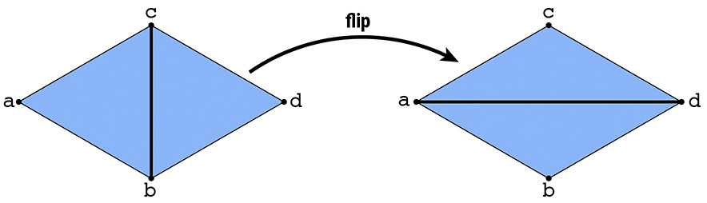
|
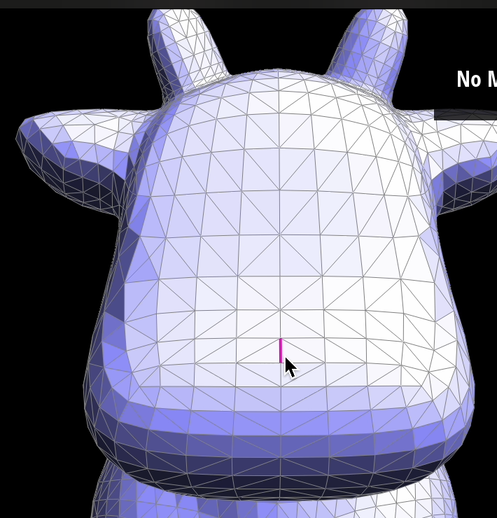 |
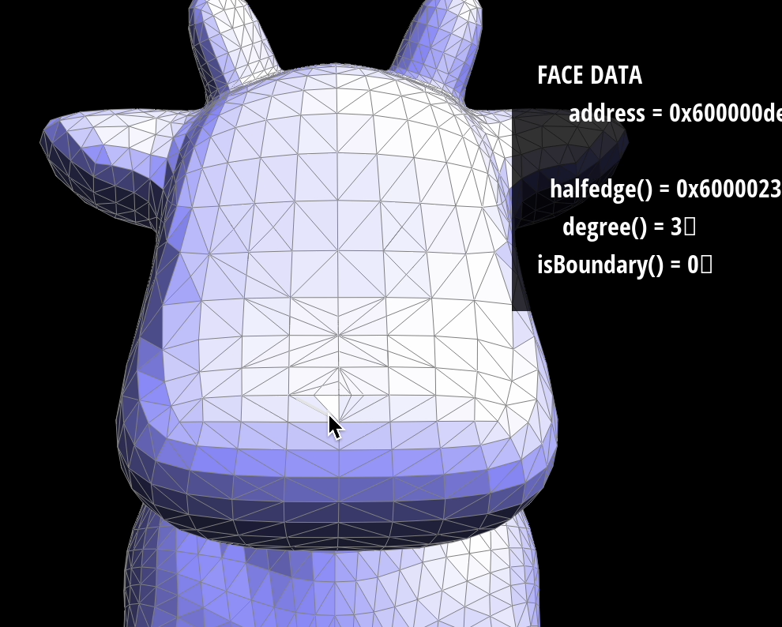 |
Extra credit: boundary edges
For extra credit, I implemented support for splitting boundary edges. The boundary case
required allocating a new boundary halfedge h_mc to maintain the boundary loop,
and walking the boundary loop with a hp pointer to find the previous halfedge
in order to correctly re-link it after the split. The rest of the split proceeds as in the
interior case, but only two new faces are created instead of four since one side of the edge
is on the boundary.
|
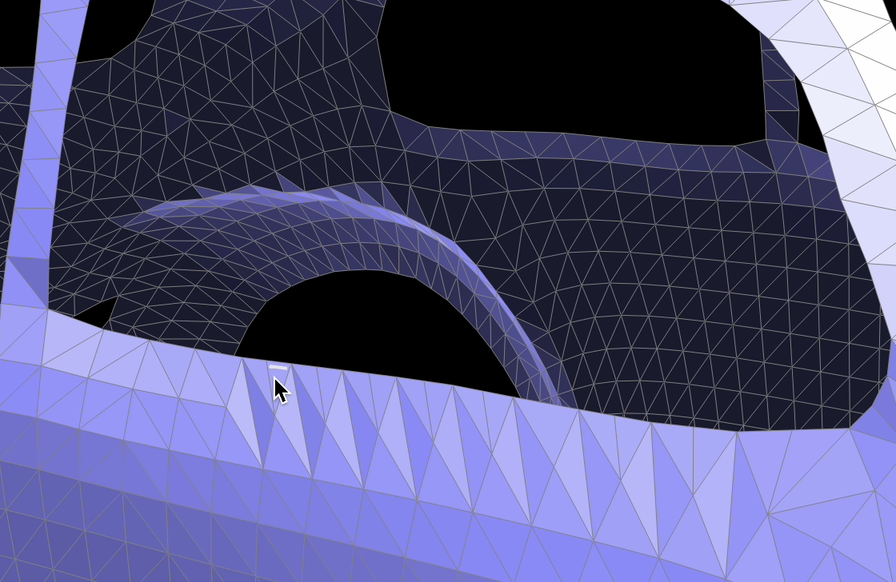 |
Part 6: Loop subdivision for mesh upsampling
Loop subdivision is implemented in five steps. First, I compute new positions for all existing vertices using the Loop weighting formula: each old vertex takes a weighted combination of its own position and the average of its neighbors, with weight u = 3/16 for degree-3 vertices and u = 3/(8n) otherwise. Second, I compute the position for each new edge midpoint as 3/8*(A+B) + 1/8*(C+D), where A and B are the edge's endpoints and C and D are the opposite vertices of the two adjacent triangles. Third, I snapshot the edge count and split only the original edges, storing the precomputed midpoint position on the new vertex. Fourth, I flip any new edge that connects an old vertex to a new vertex. Fifth, I copy all newPosition values into position.
The most important debugging trick was snapshotting nEdges() before the split
loop to avoid an infinite loop over newly created edges. Another critical fix was saving
e->newPosition to a local variable before calling splitEdge, since
the edge iterator may be invalidated after the split. Holes appearing in the mesh were traced
to a wrong vertex assignment in splitEdge (h_dm had v_d instead of v_m), caught by tracing
face cycles with print statements.
Sharp corners and edges become increasingly rounded with each subdivision, since Loop subdivision repositions every vertex as a weighted average of its neighborhood. Features that were originally crisp get pulled toward the centroid of surrounding geometry. Pre-splitting edges near a sharp feature increases the local vertex density, which tightens the neighborhood used in the averaging and helps preserve the sharpness longer across subdivision levels.
|
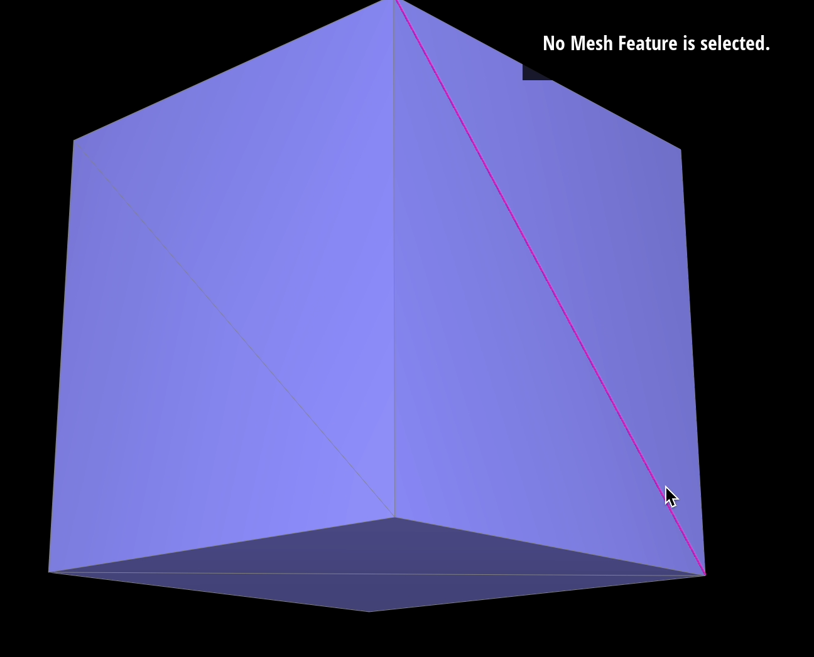 |
|
|
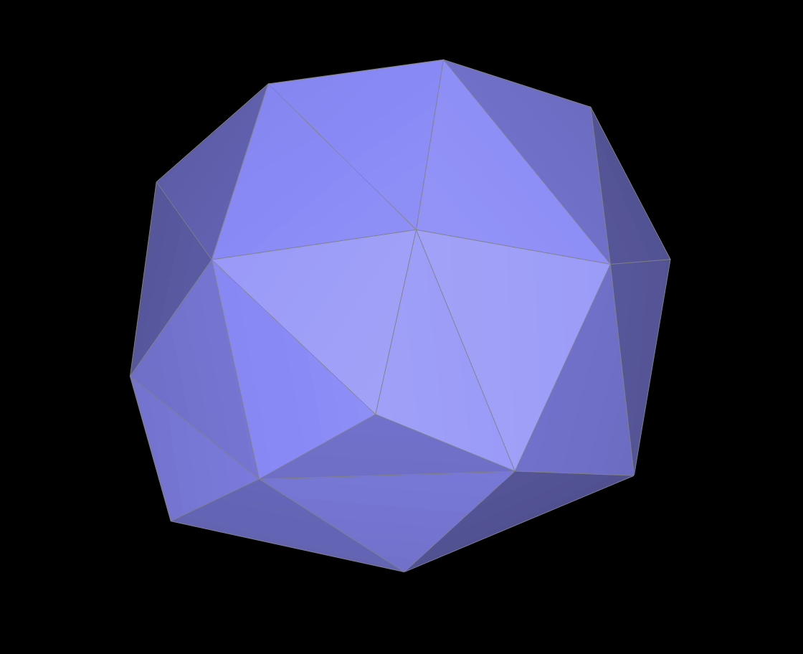 |
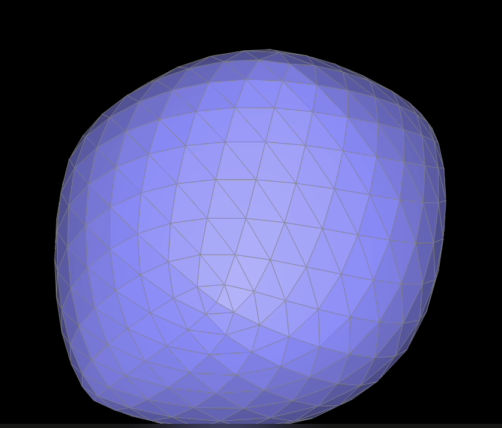 |
|
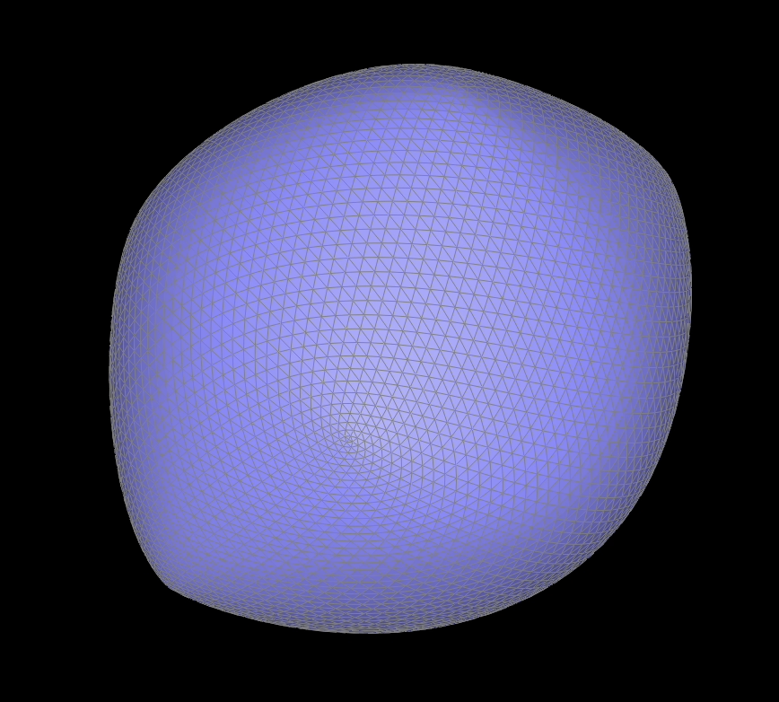 |
|
The asymmetry arises because each face of the default cube has a single diagonal edge, making the connectivity across opposite corners of each face different from the other corners. Since Loop subdivision repositions vertices based on their local connectivity, vertices with different neighborhoods get pulled by different amounts, breaking the cube's symmetry. Pre-processing by splitting the diagonal on each face — so that every face has an X pattern with 4-fold symmetry — gives every corner vertex the same degree and the same neighborhood structure. With symmetric connectivity, the subdivision averages pull every equivalent vertex equally, and the cube subdivides symmetrically.